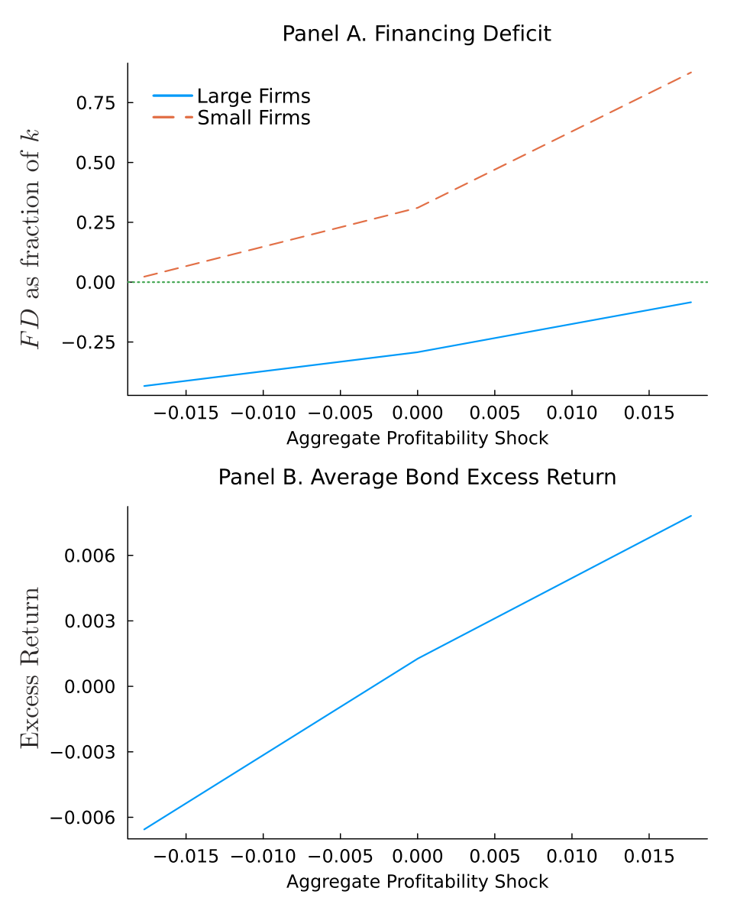
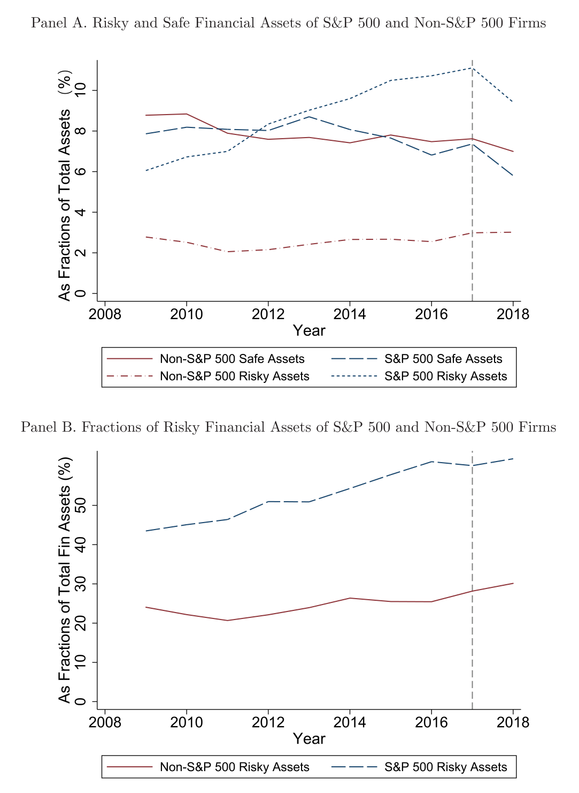
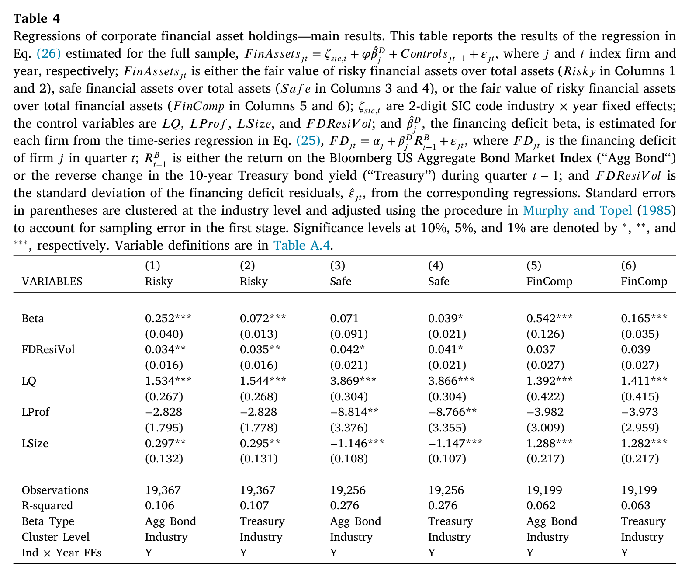

公司为什么主动持有有风险的金融资产？——一个叫「融资缺口贝塔」的答案
这篇文章我读的是 Huang and Sacchetto (2026, Journal of Financial Economics)。一句话讲清楚它的贡献：非金融企业把闲钱投到有风险的债券里，过去常被归咎于「治理差、CEO 过度自信、避税」；而这篇论文用一个结构模型加一套两步回归告诉我们，对于绝大多数公司来说，这其实是一种理性的对冲——当一家公司「最缺钱去投资」的时刻，恰恰是它持有的风险债券回报最好的时刻，那么持有这只债券就等于买了一份「在你最需要时给你送钱」的保险。论文把这种对齐程度量化成一个数，叫融资缺口贝塔 (financing deficit beta)，并证明它在横截面上正向、显著地解释了风险金融资产的持有量。
1 一个被「公司治理」草草打发掉的谜题
先把舞台搭起来。Duchin、Gilbert、Harford 和 Hayes（2017，下称 DGHH）有一个广为人知的发现：标普 500 公司的金融资产里，超过 40% 是有风险的金融资产 (risky financial assets)——主要是公司债、机构债这类东西——折算下来约占其总资产账面价值的 6%。这本身不奇怪，奇怪的是 DGHH 进一步指出，在恰当地调整了资本成本之后，每一美元投在风险资产上所创造的价值，竟然低于投在安全资产上的价值。换句话说，这是一件看起来「不划算」的事。于是顺理成章的解释就来了：是公司治理太差、是 CEO 过度自信，才会让这些巨头去做亏本买卖。Darmouni 和 Mota（2024，下称 DM）则把镜头对准跨境税收，认为大型跨国公司把可交易证券留在海外，是为了少缴利润汇回的税。
这些解释都很有说服力，但它们有一个共同的、容易被忽略的软肋：样本。DGHH 看的是标普 500，DM 看的是按资产规模排名前 200 的公司——清一色的庞然大物。诚然，对于这些公司而言，治理与税收的故事或许成立；但它们只是美国上市公司里极小的一撮。一个自然而然、却长期悬而未决的问题是：在一个更广、更具代表性的公司样本里，预防性动机 (precautionary motives) 是不是才是持有风险资产的主因？
这正是本文要回答的问题。而我读下来最欣赏的一点，是作者没有满足于「再跑一个更大样本的回归」，而是先回到理论，问一个更根本的问题：在什么条件下，一家理性的、没有治理问题、也不为避税操心的公司，仍然会心甘情愿地把预防性储蓄投到有风险的债券里？
2 核心思想：融资缺口贝塔
如果这篇论文只让你记住一个东西，那一定是融资缺口贝塔。我想把它讲透，因为整篇文章的理论、识别、实证都挂在这一个概念上。
先说「融资缺口 (financing deficit)」。它的定义朴素得不能再朴素：一家公司在某一期的投资需求减去它内部产生的资金。缺口为正，意味着公司想投的钱超过了自己手头挣的钱，差额得靠外部融资来补；而外部融资是有成本的——这是整个企业储蓄文献（从 Riddick and Whited, 2009 一脉相承）的基石假设。正因为外部融资贵，公司才有动机预防性地存钱。
接下来是关键的一跳。传统模型里，公司只能把预防性储蓄存进无风险证券。而本文允许公司同时投资两种证券：一种无风险，一种是有风险的债券 (risky bond)——之所以选债券，是因为数据里企业持有的风险金融资产绝大多数本就是债券。一旦引入这只风险债券，问题就变成了：什么样的公司，应该多配这只债券？
模型给出的答案干净利落：当一家公司的融资缺口与风险债券的回报正相关时，持有这只债券能提升公司价值。 直觉是这样的——想象某一类宏观状态，利率下行、债券价格上涨，债券给你带来了正回报；如果恰好在这种状态下，你的投资机会也最诱人、融资缺口最大、最需要外部资金，那么债券的这笔意外之财就来得正是时候，让你不必去支付昂贵的外部融资成本。债券于是扮演了一种状态依存的流动性 (state-contingent liquidity)——在论文里，作者把它和信用额度 (credit lines) 做了精彩的类比：信用额度针对的是特质冲击，风险债券针对的是总量冲击，二者本质上都是「把流动性在不同世界状态之间搬运」的工具。
而「融资缺口与债券回报的正相关程度」一旦量化，就是融资缺口贝塔：它度量的是一家公司的融资缺口对风险资产回报的敏感度。模型的核心命题随之而来——在均衡中，公司持有的风险金融资产，应当与它的融资缺口贝塔正相关。贝塔越高，债券的对冲价值越大，公司就越应该多持有。值得强调的是，这个机制完全不依赖治理缺陷或行为偏差：它是一个纯粹理性的对冲动机，与文献里基于代理问题和过度自信的解释互补而非替代。
下面这张图把这套逻辑画了出来——它展示了融资缺口与投资激励如何随状态变化而对齐，正是「在最缺钱时拿到回报」这一机制的可视化。

Figure 4: Financing deficit and the incentives to invest in the risky security
3 模型：把直觉装进一个可估计的盒子
为了让上面的直觉变得可检验，作者搭了一个无限期、离散时间的动态投资模型。我不想在这里堆砌方程，但有几个设定值得一提，因为它们直接关系到结论可信与否。
公司用资本 $k$ 生产，经营利润为 \(\exp(x+z)\,k^{\alpha}\)，其中 $x$ 是总量 (aggregate) 盈利冲击、$z$ 是特质 (idiosyncratic) 盈利冲击，两者都服从 AR(1) 过程。资本调整有二次型成本，外部融资有线性成本 \(\xi\)。公司可投两种证券：一期到期的无风险证券，以及到期期限为 \(1/\mu\) 的风险债券——参数 \(\mu\) 决定了每期到期的票面比例，因而也决定了这只债券对利率风险 (interest-rate risk) 的暴露程度。这个 \(\mu\) 是个聪明的设计：它让「风险债券」的久期成为一个可调旋钮，后面实证检验「公司到底在对冲多长期限的利率风险」时，正是靠它对应起来的。
一个为了可处理性 (tractability) 而做的关键假设是：只有票息被征税，资本利得不征税。这样做有两个好处——既不必去追踪债券随机的资本利得（否则状态变量会暴增、数值求解会失控），又保证了公司的金融资产储蓄不会发散到无穷。模型最终有五个状态变量、三个控制变量，没有解析解，作者用值函数迭代数值求解，并用模拟矩估计 (Simulated Method of Moments, SMM) 来估计结构参数。在模拟数据上跑回归，他们验证了那个核心命题确实成立：公司的最优风险债券持有量，与其融资缺口贝塔正相关。理论自洽了，接下来就看真实数据买不买账。
4 数据：从 10-K 脚注里「挖」出来的风险资产
这篇论文的实证有一个我特别想点赞的工程性贡献：数据本身。企业持有的风险金融资产的公允价值，并不在 Compustat 那样的标准数据库里现成躺着，而是零散地埋在 SEC 10-K 年报的脚注里。作者用一套机器学习 (machine learning) 算法去解析这些脚注，生成了公司—年度层面的风险金融资产公允价值数据。
最终样本覆盖 2009 到 2018 年、2886 家美国公司、共 19,367 个观测。起点选在 2009 年，是因为那一年 FASB 的 SFAS No. 157 准则开始实施，公允价值披露才变得可比。作者称这是迄今为止最全面的企业风险金融资产持有数据——我相信这个说法，因为正是「只能看到巨头」的数据限制，才让此前的文献绕不开治理与税收的解释。把样本从 200 家扩到近 3000 家，本身就是在回答引言里那个悬而未决的问题。
下面这张图对比了标普 500 与非标普 500 公司的储蓄组合构成，可以直观看到风险资产在不同规模公司间的分布差异——这也为后文「大公司与小公司动机不同」的检验埋下了伏笔。

Figure 5: Savings portfolio composition of S&P 500 and non-S&P 500 firms. This
实证策略分两步，逻辑很清楚：
- 第一步，对每家公司做时间序列回归，把融资缺口回归到参照风险资产的回报上，回归斜率就是该公司的融资缺口贝塔。主设定里，参照资产用的是彭博美国综合债券指数 (Bloomberg US Aggregate Bond Market Index) 的回报，或 10 年期美国国债收益率变化的相反数。
- 第二步，做横截面回归，把风险金融资产的公允价值（用总资产或金融资产总额来标准化）回归到第一步估出的融资缺口贝塔上。
5 他们发现了什么
主结果与模型预测一致：融资缺口贝塔正向、显著地解释了风险金融资产的持有——无论被解释变量是「风险资产/总资产」，还是「风险资产占整个储蓄组合的比重」。
量级也不小。以彭博指数算出的贝塔为例，贝塔每上升一个标准差，风险金融资产占总资产的比例就高出 0.81%。这听上去不起眼，但要知道样本里风险资产平均只占总资产的 4.2%，所以 0.81% 相当于把平均持有量推高了约 20%。对于一个横截面解释变量而言，这是个相当可观的经济量级。

Table 4
更漂亮的是后面这一连串「机制检验」，它们让对冲故事变得难以反驳：
- 对冲的是哪种风险？ 作者用不同期限的债券（联邦基金利率，1、2、3、5、10 年期国债）重估贝塔，发现系数的大小和显著性都随参照债券的期限递增——也就是说，公司主要在对冲中长期利率风险。再换成股票市场回报、Pástor-Stambaugh（2003）流动性因子、投资级与高收益债利差变化等参照变量，只有股票和投资级公司债的贝塔在 5% 水平上显著。利率风险是主角，权益与信用风险是配角。
- 谁更在意预防？ 按规模分样本，小公司的系数正向且显著，大公司则明显减弱——这与 DGHH、DM 完美对接：巨头的故事确实是治理与税收，但小公司的故事是预防。按融资缺口波动率分样本，正相关集中在高波动公司，低波动公司里不显著。按研发强度分样本，高研发公司里显著，低研发公司里弱。三刀切下去，方向全都和「面临更大不确定性的公司、对冲动机更强」这一预测吻合。
- 这份「期权」值多少钱？ 最后是一个反事实实验：强行禁止公司投资风险资产、只准持有安全资产。结果公司用安全资产替代了风险资产，但储蓄总量下降，投资、规模、利润随之下滑，对外部融资的依赖上升，公司价值相对基准模型下降
0.35%，且在经济繁荣期、在小公司身上,这一损失更大。数字看着小，但它衡量的恰恰是「风险资产作为状态依存流动性」这一选择权的净价值。
6 我的看法
我对这篇论文整体评价很高，理由有三。其一，它把一个被「行为/治理」叙事主导的话题，干净利落地拉回到理性预防的轨道上，并且不是靠嘴说，而是靠一个结构模型导出可证伪的命题——融资缺口贝塔——再去数据里验证。其二，从 10-K 脚注里用机器学习抓出近 3000 家公司的风险资产数据，是实打实的基础设施贡献，单凭这一点后续研究就会反复引用它。其三，那一组按规模、波动率、研发分样本的检验设计得极有说服力，因为它们的方向都是模型事先预测好的，而不是事后凑出来的故事。
但作为评述者，我也有两点担心，都落在识别上。
第一，融资缺口贝塔是估计出来的回归量 (generated regressor)，第一步时间序列回归本身就带着估计误差，再塞进第二步横截面回归，标准误的处理就格外要紧——我会想看到对此更细致的稳健性讨论，比如用 bootstrap 或对第一步噪声做显式修正后，0.81% 那个量级和显著性是否依然站得住。
第二，也是更根本的，这套检验本质上是相关性而非外生冲击驱动的。融资缺口贝塔高的公司，很可能在很多别的维度上也系统性地不同（行业、客户结构、产品周期性）。模型预测正相关，数据里也确实正相关，这当然是支持性证据；但它没有一个像双重差分 (difference-in-differences, DiD) 或工具变量 (instrumental variable, IV) 那样能切断反向因果与遗漏变量的设计。换句话说，这是一篇结构估计加上一致性检验的论文，而不是一篇准自然实验论文——读者要清楚这一点，才能恰当地给它的结论定位。
那么我接下来想看到什么？我最想要的，是一个外生冲击来直接检验那个对冲机制：比如某次只改变特定行业利率敏感度的政策变化，看事后这些公司的风险资产配置是否如模型所料地调整。再有，就是把这套「融资缺口贝塔」的逻辑推广到信用额度、利率衍生品等其它对冲工具上，看公司是如何在这一整套状态依存流动性工具之间做权衡的——论文里关于信用额度的那个类比，已经把这扇门推开了一条缝，很值得有人走进去。
—— 石川